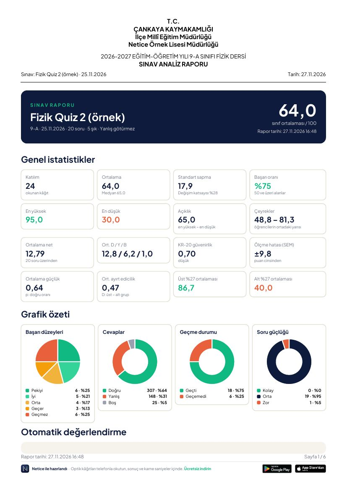
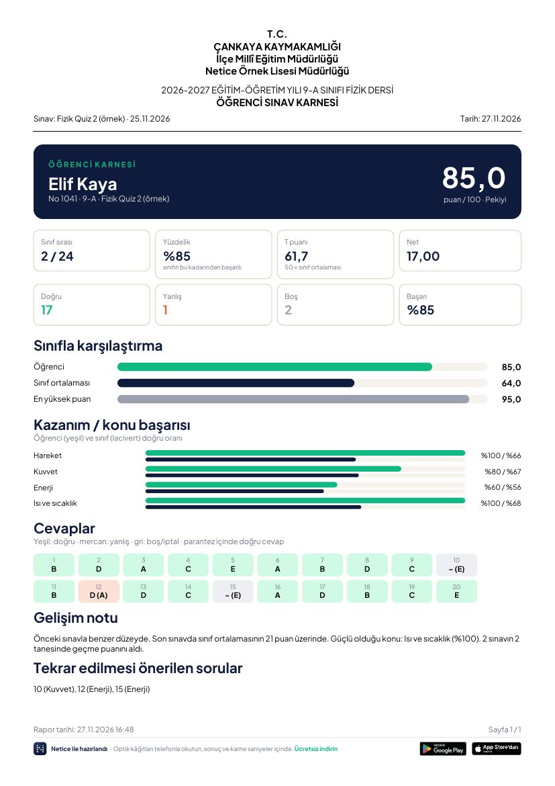
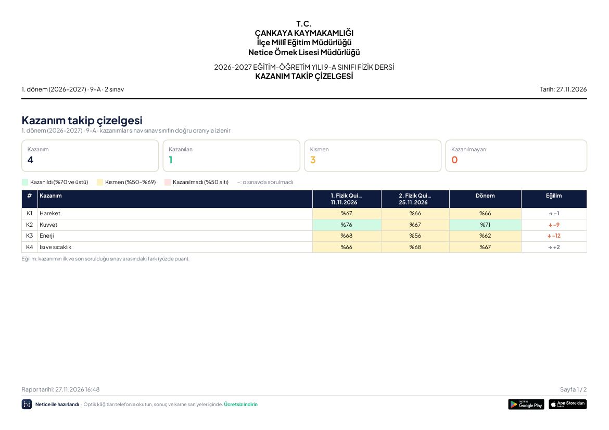
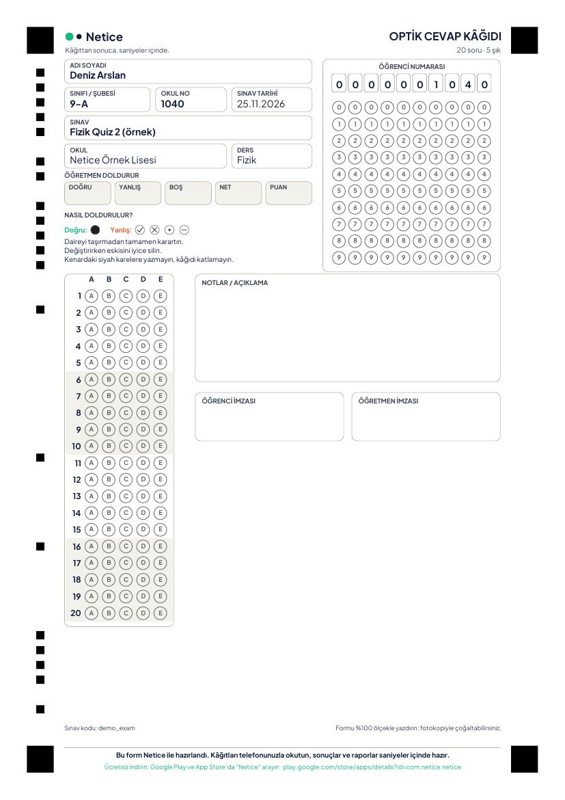
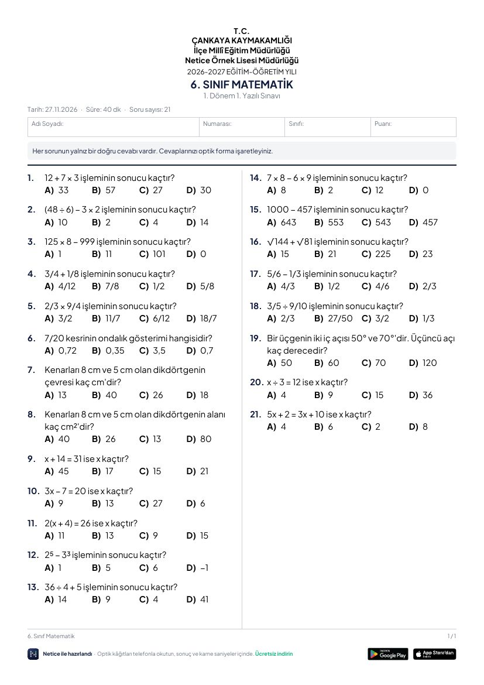
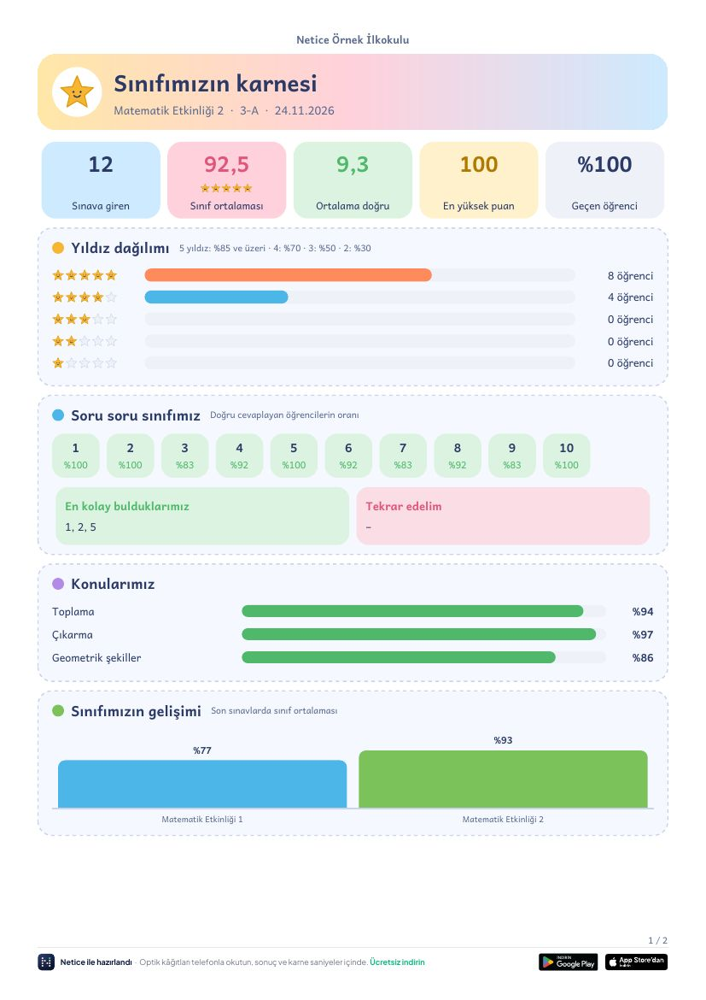

Netice ile hazırlayabileceğiniz raporlar
Aşağıdaki 20 raporun hepsi uygulamanın kendisinde, örnek bir sınıfın verisiyle hazırlandı. Bir rapora tıklayın, sayfanın tamamını görün. Raporlar 15 dilde hazırlanır; PDF olarak yazdırılır ya da paylaşılır.
Sınav sonuçları
Kâğıtlar okunur okunmaz hazır: sınıfın tablosu, her öğrencinin karnesi ve derse dönük çalışma kâğıtları.

Sınav raporu
Sınıf ortalaması, başarı dağılımı, soru soru madde analizi ve öğrenci sıralaması.

Öğrenci karnesi
Her öğrenciye bir sayfa: puanı, konu başarısı, gelişim notu ve çalışma önerisi.

Öğrenci değerlendirme kâğıdı
Öğrencinin kendi hatalarını inceleyip neden yanlış yaptığını yazdığı kâğıt.

Sonuç etiketleri
Kâğıtlara ya da deftere yapıştırılacak, puanlı küçük sonuç etiketleri.

e-Okul listesi
e-Okul'a not girerken yanınızda bulunacak, okul numarasına göre sıralı liste.

Çalışma grupları
Sınıf sonuca göre üç gruba ayrılır; her gruba ne çalışacağı yazılır.
Sınıf ve kurum analizi
Şubeleri yan yana koyun, tüm okulun tablosunu tek sayfada görün.


Dönem sonu ve yıl sonu
Dönemin bütün sınavları tek tıkla not çizelgesine, karneye ve devir dosyasına dönüşür.

Dönem sonu raporu
Dönemin tüm sınavlarından ağırlıklı ortalama ve not çizelgesi.

Dönem karnesi
Öğrencinin dönem boyunca tüm sınavlarını ve gelişimini gösteren karne.


Kazanım takibi
Her kazanımda sınıfın ve her öğrencinin ulaştığı düzey.

Öğrenci devir dosyası
Yıl sonunda bir sonraki öğretmene bırakılan öğrenci özeti.
Formlar ve kitapçıklar
Sınavdan önce: isimli optik formlar, cevap anahtarı ve soru bankasından hazır kitapçık.


Öğrenci formları
Öğrencinin adı ve numarası basılı, kamerayla okunan optik form.

Kısa quiz formu
Bir A4'e dört form: kısa quizler için kâğıt tasarrufu.

Cevap anahtarı
Cevap anahtarı formu: okutunca anahtar kendiliğinden girilir.


Soru kitapçığı
Soru bankasından iki sütunlu, resmi başlıklı sınav kitapçığı.
İlkokul (çocuk dostu)
Küçük öğrenciler ve veliler için renkli, yıldızlı, kolay okunan raporlar.


Çocuk dostu sınıf raporu
İlkokul için renkli, yıldızlı ve anlaşılır sınıf raporu.

Çocuk dostu karne
Velinin kolayca okuyacağı, yıldızlı ve resimli öğrenci karnesi.

Tebrik belgeleri
Başarılı öğrencilere verilecek renkli tebrik belgesi.

İsimli cevap kartları
Küçük öğrenciler için iri daireli, isimli cevap kartları.
Raporlarınız kendi sınıflarınızla hazırlansın
Örneklerdeki öğrenciler ve kurum adı gerçek değildir. Netice'yi indirip kâğıtları okutun; aynı raporlar sizin sınıflarınızın verisiyle saniyeler içinde hazır.